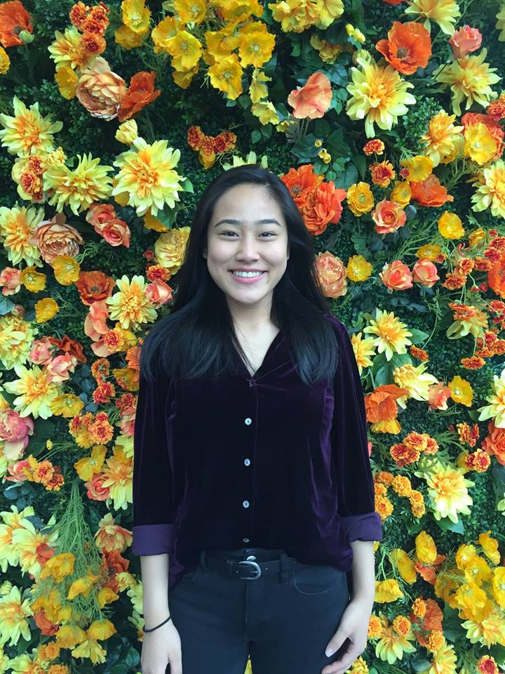
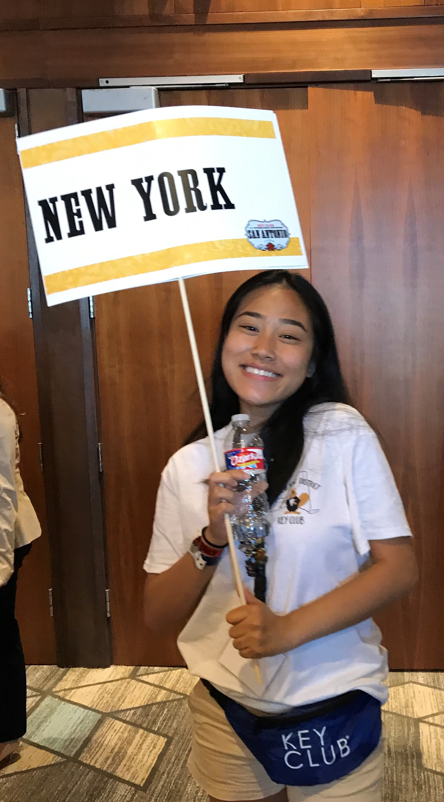
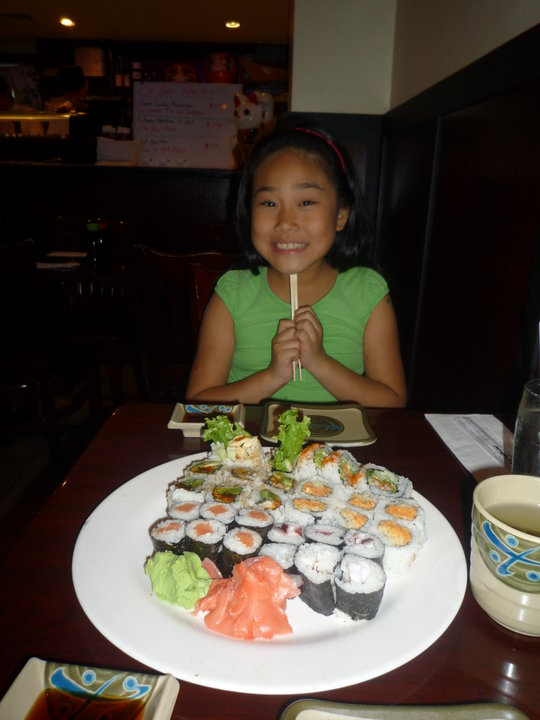
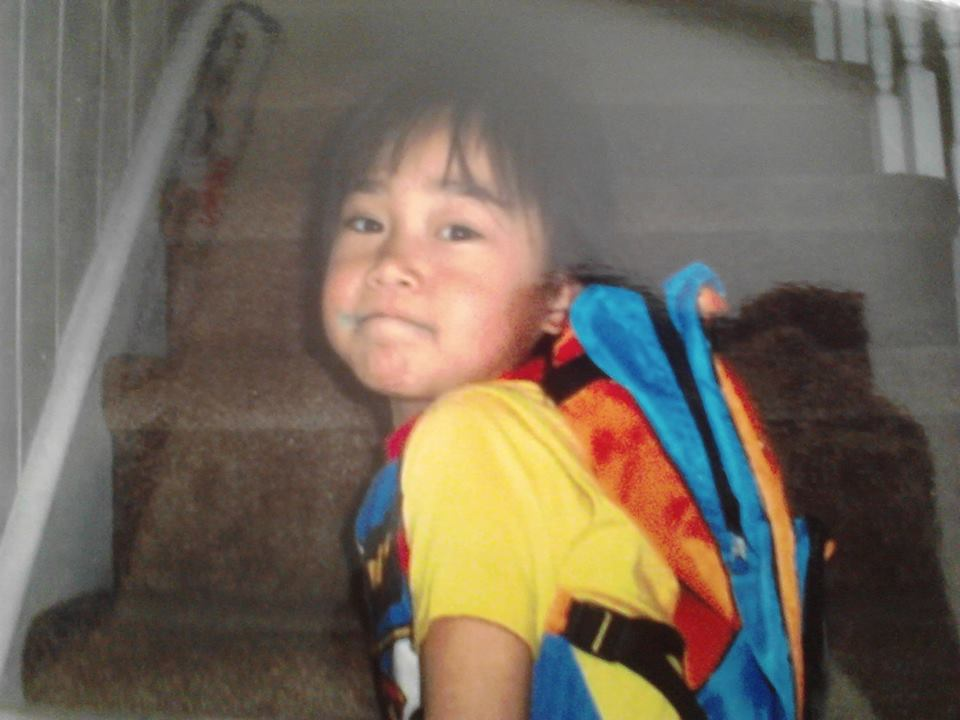

Female. Asian American. New Yorker. Feminist. Seventeen. Volunteer. Mathlete.

Hi, welcome to my website. My name is Josephine and I was born in Manhattan on May 11, 2000 as the youngest of 4. However, I lived in Brooklyn all my life. I am a rising senior at Midwood High School at Brooklyn College. In my free time, I love exploring the city with my friends and trying new foods with my sisters. Over the summer, I love running early in the morning with my friends. But I love volunteering all year round!!
But let's talk food! Ever since I was young, I loved eating candy, especially Dum Dum Lollipops. As shown in the picture below on the right, I stained the corner of my mouth with a blue raspberry dum dum. I still love eating candy, especially pink starbursts and watermelon jolly ranchers! It keeps me awake and energetic. But for meals, I could go days only eating chicken, potatoes, or sushi. I love love love chicken so much, especially chicken nuggets. I'm always asked which fast food chicken nugget is my favorite, but I don't have a favorite because they're all chicken nuggets!! But just because I love eating chicken and sushi, it doesn't mean I dislike eating vegetables. I could eat a bowl of steamed broccoli or squash.
When I was younger, I really enjoyed running up and down stairs. But whenever I wasn't running down the stairs, I was sliding down! I guess you could say, I've loved adrenaline rushes since I was 4 years old. Unlike most people, I find joy in going on roller coasters and water rides!



Key Club
You might be wondering, what is a key club? what kind of club is it? why is she so involved and in love with it? Well, to start off, key club has been more than just a club for me for the past 3 years. It is the largest and oldest student led organization. It's a community service based club that emphasizes service; service to your home, school and community.
I LOVE KEY CLUB I LOVE KEY CLUB I LOVE KEY CLUB I LOVE KEY CLUB I LOVE KEY CLUB